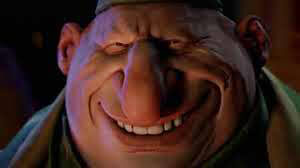
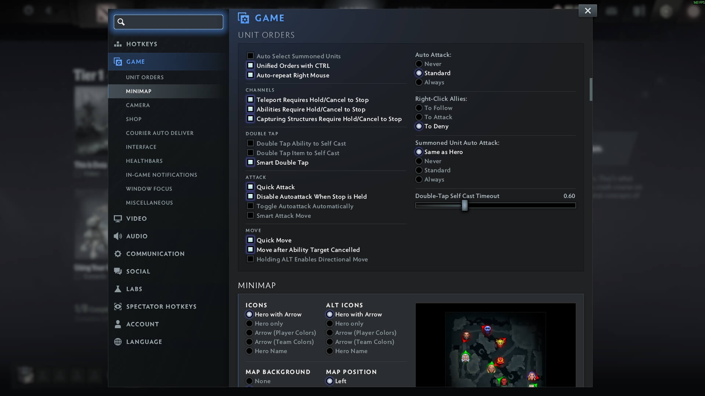
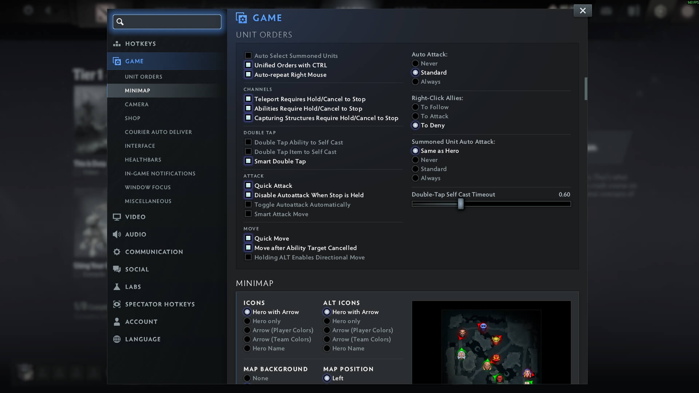

ETOFOK LAYOUT
for Dota 2
Advanced Hotkeys & Setup
Preface
A layout should make sense: both visually and mechanically.
The more intuitive it is, the easier it is to use, the fewer mistakes you're going to make, and the faster you're going to execute on your decisions.
Even if your decisions are really bad, at least you will no longer be limited by the execution.
Think about it: the layout is the only way you interact with the game. So it's extremely important to have a great one. It has to be an extension of your mind.
On this page you will find a very extensive explanation of the etofok layout for Dota 2. This is the best Dota 2 hotkey layout and settings possible. In my opinion. That's what I use. You don't have to use it.
I will present the hotkeys and then I'm going to explain the logic behind every decision for every hotkey and for every in-game setting.
Hotkeys Overview
- Select Group 1: 1
- Select Group 2: 2
- Select Group 3: 3
- Select All Other Units: `
- Select Courier: F1
- Abilities: Q W E R T
- Abilities (Self): Q W E R T +
Alt - Abilities (Learn): Q W E R T +
Ctrl - Items: A S D Z X C
- Items (Self): A S D Z X C +
Alt - Neutral: V
- Neutral (Self): V +
Alt - Quickbuy: B
- Buy Sticky: N
- Teleport Scroll: G
- Teleport Base: G +
Alt - Open Shop:
Alt + WheelUp - Courier Deliver:
Alt + WheelDown - Courier Burst:
Alt + B - Attack: Spacebar
- Stop or Hold: F
- Directional Move: CapsLock
- Move: M
- Upgrade Talents:
Alt + F1 - Upgrade Left Talent: 1
- Upgrade Right Talent: 2
- Chat Wheel: F2
Control Groups
I use "normal" control groups.
- Select Group 1: 1
- Select Group 2: 2
- Select Group 3: 3
- Select Group 4: 4
- Select Group 5: 5
Do not be intimidated by this many control groups — we're barely going to use them.
The most control group heavy hero in Dota 2 is autism dedication to the hero.
95% of hero pool will do perfectly fine with just 2-3 control groups.
We really want to have specific binds for things like
 ,
,


Items like  are massively better when used to their potential. You can even bind the units they provide individually.
are massively better when used to their potential. You can even bind the units they provide individually.
Next up we have dominated neutral creeps like  or
or  or
or
And last, individual  illusions might be useful for scouting and baiting.
illusions might be useful for scouting and baiting.
Select Unit
Here's another approach.
Dota 2 has these fantastic features:
1.
2.
This is a substitute to assigning a specific unit to a control group, but it's handy to have both.
3.
In other words,
4.
And here's how I use it:
- Select Hero: Mouse Wheel Up
- Select All Other Units: `
- Select All Units: Mouse Wheel Down

Some things are difficult to explain. Like this one.
I like it a lot, because scrolling the mouse wheel is faster than tapping the key or box selecting everything.
As a bonus: I get to spam Mouse Wheel Up and Mouse Wheel Down as an anxiety sink.
It's the same feeling as switching weapons with mouse scroll ins Counter-Strike.
But most of the time I use control groups.
The mouse wheel binds are 80% for fun and 20% for actual utility.
p.s. I bind the hero to
Alt modifier 
Alt is our
Think of Alt as "to me".
Hold down Alt and everything you cast automatically targets your own hero i.e.  ,
,  , etc.
, etc.
This is by far one of the most important features and we're going to use it for everything.
Abilities
Abilities use the intuitive QWERT layout:
- Abilities: Q W E R T
- Abilities (Self): Q W E R T +
Alt - Abilities (Learn): Q W E R T +
Ctrl
Not everyone knows, but
It's a great feature, I recommend getting used to it.
Abilities — Quick Cast
Quick Casts allow us to cast instantly with a key press, eliminating the need for a mouse click.
Everything should be on Quick Casts, with one exception — precise Area of Effect spells.
Notable examples:  ,
,  ,
,  , etc.
, etc.
Because we need to aim these abilities very carefully — it's better to keep them on Normal Cast.

Alternatively, there is

Holding down the ability key will not fire the ability until the key is released.
But I don't use this option — I find it clunky.
Don't forget to rebind spells onto Quick Casts for Neutrals.
Most neutrals have a spell to cast.

This is also useful for 
Abilities — Toggle Auto Cast
Manually bind


Abilities — Ability 6
Not every hero has
And when they do, sometimes it's important and sometimes not at all.
Y is not an optimal key for an important ability — it's just too far.
Since we do not have
- Ability 4, 5 or 6: 4
Here's an example of 6 a button hero.
Experiment with it.
For example,  doesn't even have a bind to his
doesn't even have a bind to his  , so having E and R right next to each other as buffs makes a lot of sense.
, so having E and R right next to each other as buffs makes a lot of sense.

I don't play
Take away: use the best keys for the most important stuff first.
Items
Arguably, instant access to items is even more important than instant access to abilities.
That's why we bind items to Quick Cast.
And just like with abilities — we must have instant access to self-cast.
That's why we don't bind items to Alt a.k.a. the HoN item binds.
We also want it to be intuitive and easily accessible.
That's why we bind items right below the ability row.
- Items: A S D Z X C
- Items (Self): A S D Z X C +
Alt
This way all the 6 items are easily accessible, self-cast is easily accessible and the layout is visually coherent with the in-game interface.

You will never misclick, forget about or misuse anything this way.
Per-Item Quickcast
Very few people even aware of this option, but it's the best.

This menu allows us to set Normal Cast per item, overriding Quick Cast slot binds.
Uncheck the following:


Regardless of the inventory slot, these items will use Normal Cast.
This is especially critical for
Neutral Item
- Neutral: V
- Neutral (Self): V +
Alt
Easily accessible and (almost) visually coherent.
Teleport Scroll
- Teleport Scroll: G
- Teleport to Base: G +
Alt
Think of G as "Go Ground".
Should be obvious, but please use Normal Cast, not Quick Cast.
G is purposefully separated from the action hotkeys to prevent accidental activation.
Quickbuy & Sticky
We use these often, so they should be accessible.
B for
- Quickbuy: B
- Buy Sticky: N
Buy Now.
Attack, Stop
I've been using Spacebar for
- Attack: Spacebar
- Stop or Hold: F
The thumb is often a very underused finger — it's ideal for
And I promise, it's much easier (and faster) to cycle through...
1Spacebar2Spacebar or QSpacebar than 1A2AQA
If you thought of S as Stop — think of F as Freeze, Forfeit or F*ck it.
F is in the very middle of everything: below abilities, to the right of items, to the left of teleport scroll and above the neutral item slot.

Now our left hand rests on this block of keys with instant reach to everything.
It is extremely comfortable.
Shop & Courier
While we are on the topic of items, let's discuss buying them.
These keys are unusual and should surprise most players.
- Select Courier: F1
- Open Shop:
Alt + WheelUp - Courier Deliver:
Alt + WheelDown - Courier Burst:
Alt + B
Here's how and why it works.
We do not want to move our hand from the resting position.
Our left thumb rests on Alt and Spacebar, and we use MouseWheel Click for
That's why
Very often we need to buy items while in action, fast.
And ideally, without moving our fingers from the action keys.
Well, these binds solve both problems spectacularly.
This is by far the best combo for comfort and speed.
 makes sense, because we
makes sense, because we
Bind  to R as courier's "Ultimate" ability.
to R as courier's "Ultimate" ability.
It's easier to reach in a pickle.
Then just use the 2 buttons consecutively: F1 → R
Chances are, when you really want to use the you will be manually controlling the courier anyway.
Move, Directional Move
 and
and 
CapsLock is a great key for
- Directional Move: CapsLock
For example, to stick
But it's the least used action key by far.
- Move: M
It is awkward to use, but since we barely need it — it's fine.
Upgrade Talents
This hotkey is not something that you use very often.
Literally up to 8 times in a very long game.
But there was a period of my life when I was a Turbo enjoyer, where it's not rare to get a big level up in the middle of a fight.
That's where I found out that having a hotkey for

However, ` is just way too good of a hotkey to waste it on something that's barely used.
The compromise I found for myself is
- Upgrade Talents:
Alt + F1 - Upgrade Left Talent: 1
- Upgrade Right Talent: 2
- Upgrade Attributes: none
Unfortunately, Alt + 1 and Alt + 2 can't be used for talent upgrades.
When I try to use Alt for these binds the game just alerts the talent status in chat.

I think it's an oversight (but not the biggest).
Chat Wheel
This is not for flavor — this is a mandatory bind, and it has to be easily accessible.
Emotional Damage is a real thing, as is Emotional Support.
The
And after trying out probably 10 different variations — just use F2
It's good.
- Chat Wheel: F2
I never use
For it just set the next F-key like F3.
Chat Wheel Setup
Over a decade I figured this is the required setup to play.
We absolutely need these commands on hand.
Towards the top we have progressively "aggressive" call-outs.
Towards the bottom we have progressively "defensive" call-outs.
Synergizes perfectly well with every other call-out.
Prepares the team for action.
Reminds them not to dive.
Reminds them not to chase off your own high-ground.
It's the best.
Treat everyone like they have a 3 second memory.
,  , etc.
, etc.
Generally useful around objectives, especially high-ground.
When used with
It's also useful when you actually want to group up, i.e. for  or
or
It serves as "Wait for me" and "I'm not there yet" at the same time.
These are great call-outs, because they lower the chance of our team overextending.
The team needs to know whether they can rely on us to make better decisions.
Use with
Camera Grip & Edge Pan
Camera Grip is generally much better.
Especially so, if your mouse sensitivity is low (<1000).
I have
The main reason to keep
Portrait clicks can be game changing, because in a complete chaos of a fight it's not easy to target your important ally with , or  , which is often a matter of life and death.
, which is often a matter of life and death.
Having
Here's something very interesting.
You can use spells and items on allies via portrait clicks.
You can't use spells or items on enemies. That would be too ridiculous.
What you can also do — is issue
"Attacking" an enemy draws creep aggro. And you can "attack" any to draw creep aggro — it doesn't have to be the on your lane.
This is obviously omega useful on  , but also has a lot of value early on to draw aggro to your ranged creep in any situation.
, but also has a lot of value early on to draw aggro to your ranged creep in any situation.
This happens every game, so that's free value.
Auto attack
Use  and
and 
Use
You might want to use
I personally don't bother with it.
You definitely want to enable auto attack for illusion based heroes such as  and
and
Don't forget to enable

Abilities Require Cancel

Generally, you want this Enabled to prevent wasting your channeled spells on misclicks, such as ,  or
or 
However, you really want this Disabled on
You want to jump  while channeling
while channeling 
If you have
It's unreasonably clunky and you will die a lot because of it.
Minimap
Alt should not affect it.

I use
Turns out, life is — indeed — very short. I remember playing Dota 1 on dial-up connection on Battle.net in 3rd grade. It's been, what, 23 years since? It's mind boggling how much life that is and how sometimes random and inevitable death is. I feel lucky I even get to write about freaking hotkeys in a video game.
icons stand out more. But I'm also color blind so that might be a factor here.
I find it distracting, so I do not use it.
Minimap Misclick Protection Time
This one is interesting, because it depends on your skill level.

Newbie players often misclick on the minimap in panic.
Notoriously, this happens to Radiant players intending to walk their back to base, but they overshoot the mouse movement and accidentally click on the minimap, making them walk in whatever direction (and feed).
That's exactly what this option is for: it ignores all minimap inputs for a split second to stop this from happening.
Unfortunately, for slightly more experienced players this setting makes it worse, because the game literally doesn't register our clicks. That's bad.
Set it to 0.
Healthbars
I see no reason to use anything else but this.

Why would I need everyone's nicknames cluttering my screen?
Especially considering the kind of nicknames Dota 2 players have.
It's an art form, and I will appreciate it in a lobby.
Audio
A couple of years ago I disabled
It's a peaceful life.
I disable

I used

I like this option a lot, but it's a bit distracting.
Labs
These are some next-level gameplay options.

, , , etc.
 on a creep.
on a creep.
 or, previously,
or, previously,
Another thing you might snatch is the  .
.
The problem is finding dedicated buttons to these modifiers.
I feel like you need actual extra keys on your keyboard to use these, for example the macro keys on Razer Blackwidow or Logitech G915 (this is not an advertisement, just an example).
p.s. in fact, I have used the Blackwidow (two actually) for like 7 years, but as for today it's no longer my choice.
On mouse buttons...
I highly recommend NOT binding any actions to mouse side buttons.
Use the mouse for aiming.
3 reasons NOT to bind any actions to mouse:
1. Your grip is worse, because you have to account for the buttons in your grip.
2. Your aim is worse, because your grip is worse.
3. Your hand is more strained, because of the bad grip.
Honestly, it's very hard to explain the true effect, and I encourage you to experiment. Listen to your body.
I've used Mouse side button 1 for my  for about 15 years (!).
for about 15 years (!).
I felt like I needed that extra button — but I just had a bad keyboard layout, so I had to compensate with putting buttons on the mouse.
So one day (after playing years of Starcraft 2), I decided to fix my hotkeys.
And everything started to feel lighter. Quicker.
Every part of your gameplay will benefit from having a better interface between your brain and your fingers.
I highly recommend against binding actions to mouse side buttons whenever possible.
p.s. As a side note, I found Enter & Backspace truly the BEST buttons as mouse side buttons in general.
Microphone
To limit myself from talking in-game I use a very bad hotkey for it, on purpose.
Like Numpad9, but again — I don't use it much.
If you want a bind for the microphone — just have one on the mouse.
And no, it's not in opposition to what I've said in the previous section.
If you want a keyboard bind for the microphone let's take a look what keys are still unused.
Unused keys
We've almost exhausted our left hand side of the keyboard completely — and that is good.
Here's what's left unused so far:
Win, H, Y, 5, F4 and beyond to the right.
If you don't use
Alt + Capslock
Alt + 1
Alt + 2
Alt + 3
Alt + Space even.
Btw, for some reason Alt + ` can't be bound.
In the settings it gets put, but there's no in-game response, so it can't be used.
There's still mouse wheel up and down:
Mouse Wheel Up
Mouse Wheel Down
Since I use
But for example my friend is disabled on her right hand, so she is limited to only using the mouse. She has abilities bound to Mouse Wheel Up and Mouse Wheel Down.
And if you have a mouse with 2 side buttons you have some extras to consider:
Mouse Side Button 1 (Mouse 4)
Mouse Side Button 2 (Mouse 5)
Alt + Mouse Side Button 1 (Mouse 4)
Alt + Mouse Side Button 2 (Mouse 5)
So there's still a plenty to go around!
All options in screenshots


 
